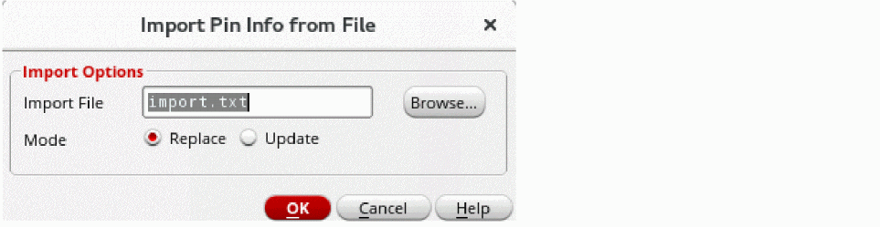

Importing Pin Information from a Pin File
To import a pin file in the Pin Tool:
- Choose Plan – Pin Planning – Pin Tool. The Pin Browser is displayed.
-
Choose Tools – Pin File – Import.
The Import Pin Info from File form appears.
 - Specify the required pin file name in the Import File field. Alternatively, click Browse to choose the required text file.
- Select the Mode in which the pins are to be created.
- Click OK to generate pins based on the definitions in the selected pin file.
Related Topics
Export Pins Information to File Form
Import Label Info from File Form
Return to top